Note
Hello, welcome to the SunFounder Raspberry Pi & Arduino & ESP32 Enthusiasts Community on Facebook! Dive deeper into Raspberry Pi, Arduino, and ESP32 with fellow enthusiasts.
Why Join?
Expert Support: Solve post-sale issues and technical challenges with help from our community and team.
Learn & Share: Exchange tips and tutorials to enhance your skills.
Exclusive Previews: Get early access to new product announcements and sneak peeks.
Special Discounts: Enjoy exclusive discounts on our newest products.
Festive Promotions and Giveaways: Take part in giveaways and holiday promotions.
👉 Ready to explore and create with us? Click [here] and join today!
Lesson 3: Remote Control Your GalaxyRVR
Get ready to take the controls! In this lesson, you’ll become the mission commander of your very own GalaxyRVR Mars Rover.
We’ll transform our coding knowledge into real-world action, programming your rover to navigate across simulated Martian terrain. Watch as your commands bring the rover to life, moving exactly as you direct it right here in the classroom.
This is where your Mars mission truly begins – let’s start driving!
Learning Objectives
Set up communication between the Mammoth Coding APP and your GalaxyRVR by uploading the necessary Arduino code
Master controlling your rover’s movements using the arrow key interface in the APP
Program and execute the four fundamental rover maneuvers: forward, backward, left turn, and right turn
Connecting the APP to GalaxyRVR
Note
If you have overwritten the firmware and need to restore communication, follow 3. Updating the R3 Board Firmware.
Before using the GalaxyRVR for the first time, fully charge the battery with the supplied Type-C USB cable. After charging, turn the power on.
To start the ESP32 CAM, switch the mode to Run and press the Reset button on the R3 board. The bottom light strip will begin flashing to indicate a successful startup.
Note
If the bottom light strip shows a flashing light of any color other than green, your GalaxyRVR needs a firmware update. Please refer to Update Firmwares.
Connect your mobile device to the GalaxyRVR’s WiFi network.
The network name (SSID) is
GalaxyRVRand the password is12345678.If you see a warning stating “No Internet access,” please choose the option to “Stay connected.”

Open the application on your mobile device to begin the connection process.
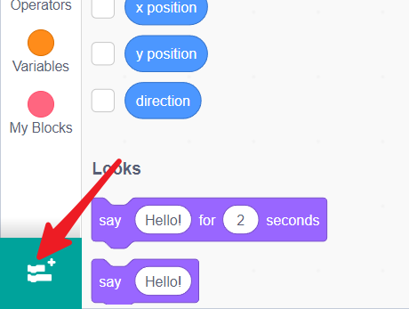
Select and load the GalaxyRVR extension within the APP.
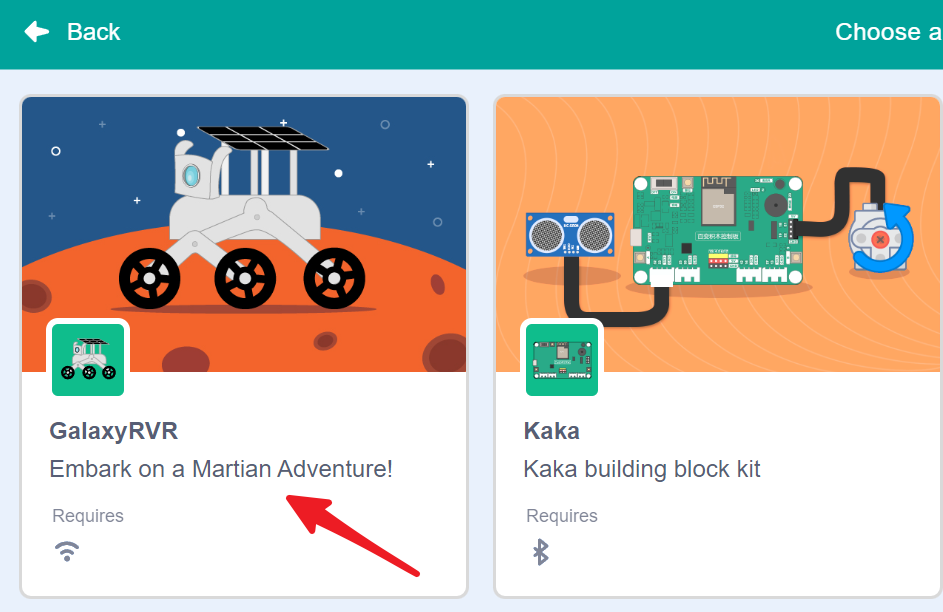
The APP will automatically scan and search for available GalaxyRVR devices.
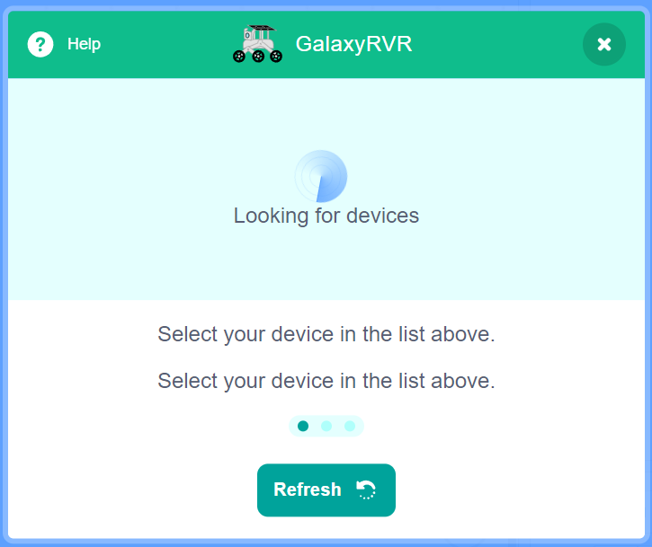
Select your GalaxyRVR from the list to connect.
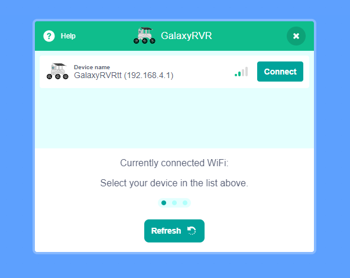
Note
Connection status is indicated by the GalaxyRVR’s LED lights:
Flashing Purple: Searching for connection
Solid Off: Successfully connected and ready
Re-connect APP
When your device is disconnected from GalaxyRVR, you will see this pop-up window appear in the interface. Click reconnect.
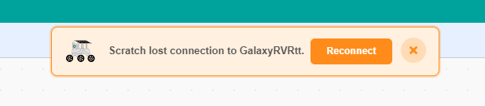
If you close the pop-up window, you can also reconnect by clicking this button in the GalaxyRVR category.
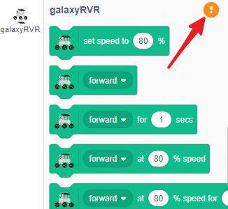
Find your GalaxyRVR and click connect.
Controlling the GalaxyRVR with the APP
In the coding interface, find the dedicated GalaxyRVR category containing all the rover control blocks.
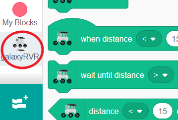
While we typically use the green flag to start programs, there are other ways to trigger actions. Find the
when up arrow key pressedblock in the Events category - this will execute code whenever you press that specific key.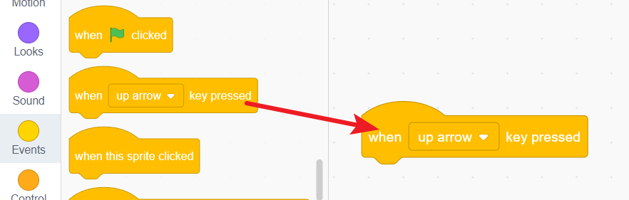
Create four event blocks - one for each arrow direction (up, down, left, right). This will form the foundation of your rover’s control system.
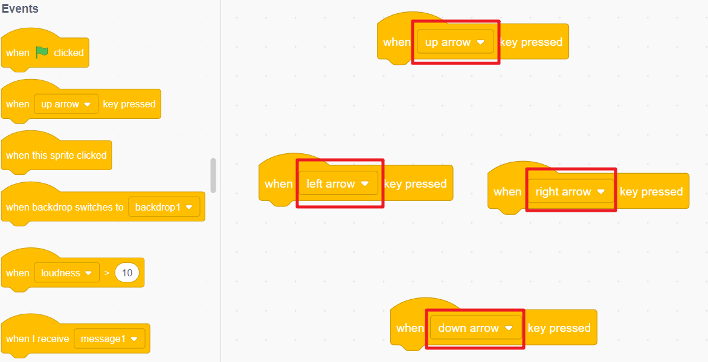
Note
Need more coding space? Click the eye icon below the green flag to temporarily hide the stage area.
Now complete each event block with the corresponding movement command:
Up arrow → Move forward
Down arrow → Move backward
Left arrow → Turn left
Right arrow → Turn right
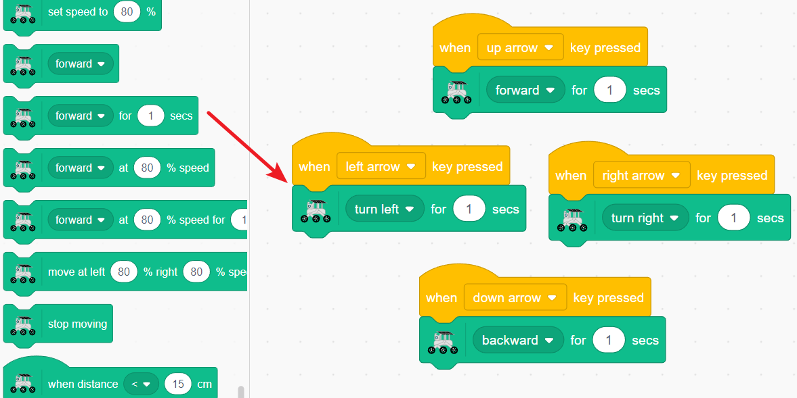
Click the stage expansion button to enter the full control mode.
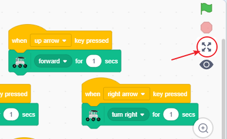
You’ll now see an enlarged stage with virtual direction keys. Press these keys and watch as you directly control your GalaxyRVR’s movements in real-time!
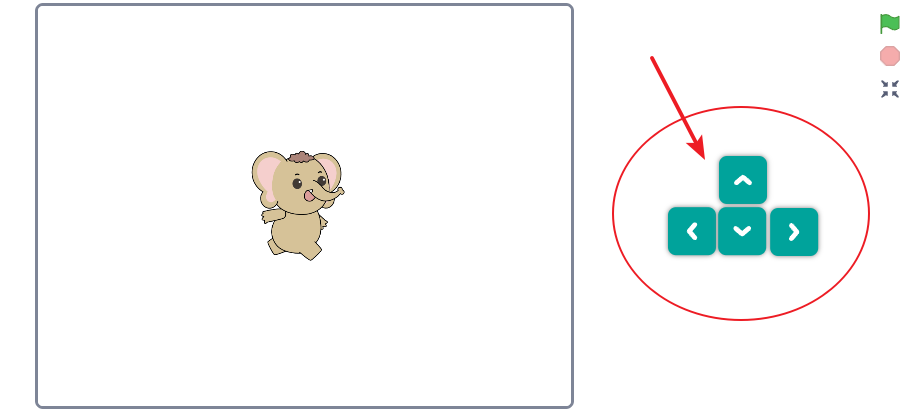
{kind=link}
{kind=link}
Movement Control Blocks
Basic Direction Control
Controls the GalaxyRVR’s movement direction. Use the dropdown menu to select forward, backward, left turn, or right turn.
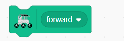
Speed Setting
Sets the GalaxyRVR’s movement speed. Note: This block only sets the speed and does not initiate movement by itself.
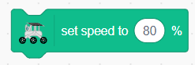
Timed Movement
Makes the GalaxyRVR move in the selected direction for a specific duration. You can:
Choose direction (forward/backward/left/right) from the dropdown
Set movement duration by changing the time value
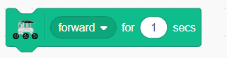
Speed-Controlled Movement
Moves the GalaxyRVR at a specific speed percentage. You can:
Select movement direction from the dropdown
Adjust speed percentage (0-100%)
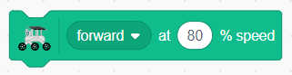
Precise Movement Control
Combines speed and time control for precise movements. You can:
Set movement direction
Adjust speed percentage
Set movement duration
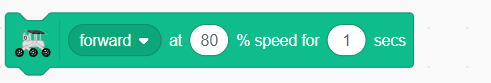
Advanced Wheel Control
Provides independent control over each wheel for complex maneuvers. You can:
Set left wheel speed separately
Set right wheel speed separately
Control movement duration
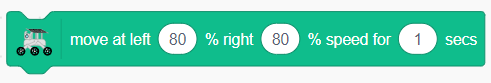
Emergency Stop
Immediately stops all GalaxyRVR movement.
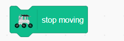